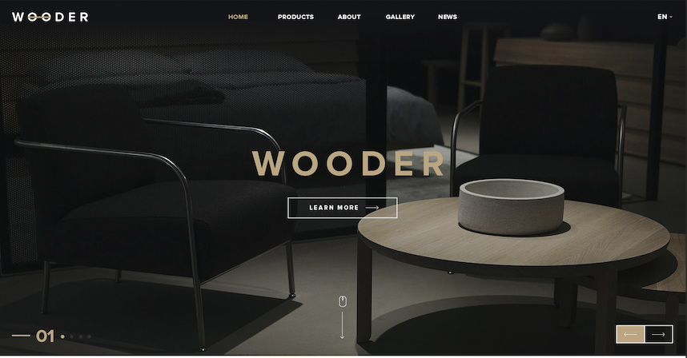
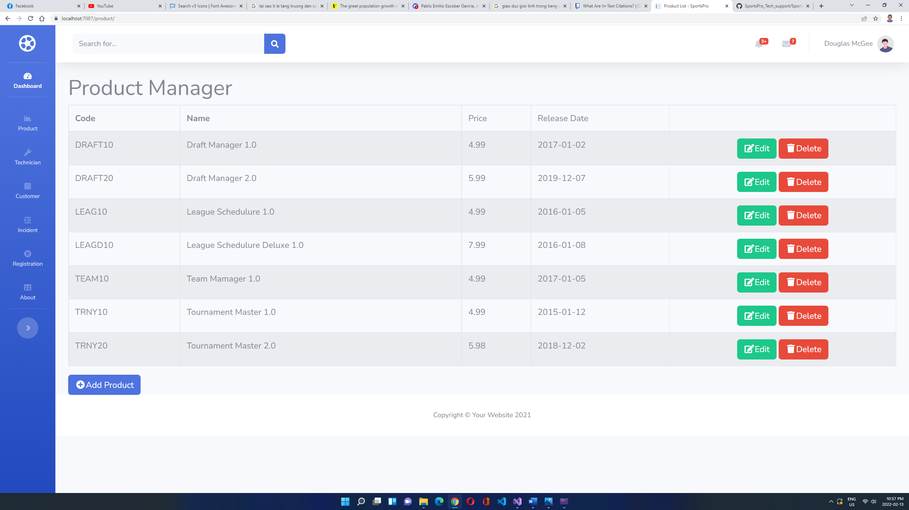
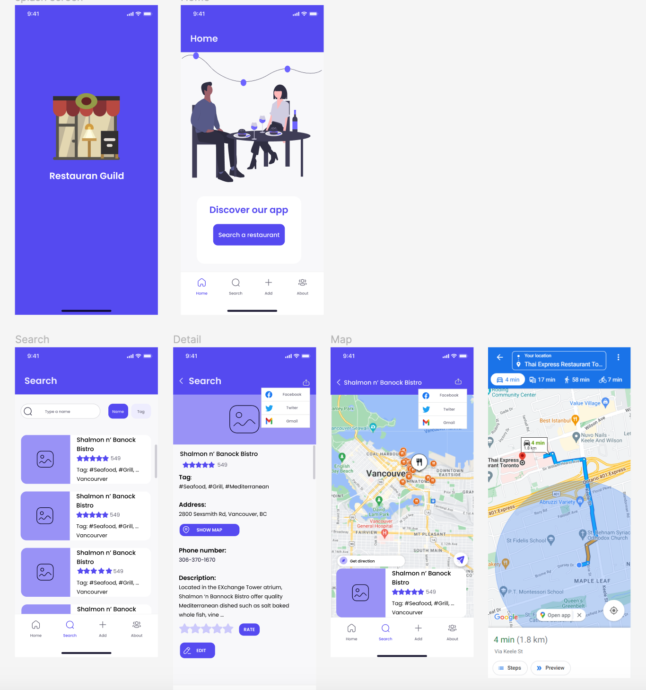
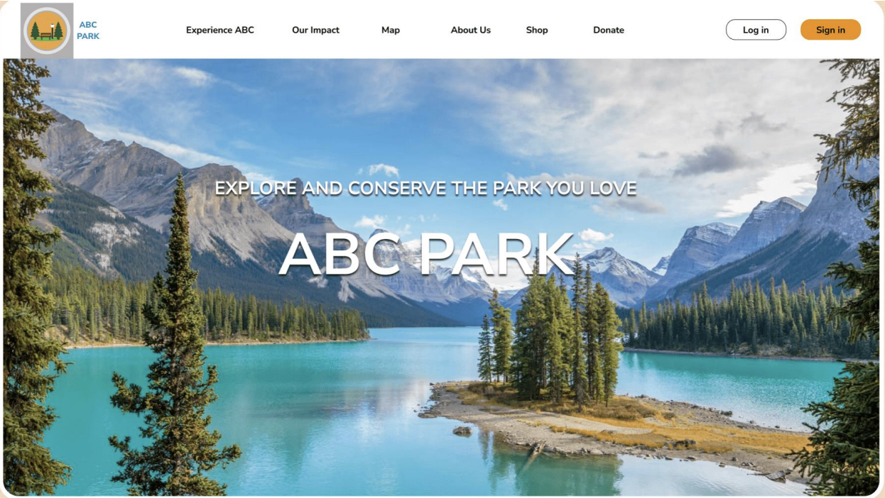

Academic work Samples
Wooder
Wooder is a platform designed to facilitate the buying, selling, renting, or leasing of real estate properties. Wooder allow users to search for properties based on various criteria such as location, price range, property type, and features. Wooder often include detailed property listings with photos, virtual tours, and information on amenities and neighborhood features. Users can also typically view and compare similar properties and get in touch with real estate agents or property managers to schedule viewings or ask questions.
GBC Sport Pro
Sport Pro is a website that provides users with a graphical user interface for accessing and analyzing data from different sources in real-time. Sport Pro is a platform that provides employers and human resource professionals with a visual representation of key data related to their employees. Sport Pro is used to track employee performance, manage time and attendance, and monitor compliance with company policies.
Neeon

Neeon is a clean and Modern HTML5 & CSS3 Template. Neeon is best suited for Blog, News & Magazine related web site. Neeon is build on latest Bootstrap 5 framework. Neeon come with 9 different Home pages, different post pages, different post detail pages.
Restaurant Guild
Restaurant Guild is an application that allows users to browse menus, place orders, make reservations, and pay for meals through their smartphones. The app may also provide features such as reviews, ratings, and recommendations from other users, as well as loyalty programs and rewards for frequent customers. Restaurant Guild also offers delivery or pickup options, as well as the ability to track the status of orders in real-time. Overall, Restaurant Guild app provides a convenient and seamless experience for customers to engage with a restaurant's services.
ABC Park System
ABC Park is a web-based application designed to help park managers efficiently manage their parks. The app provides features such as a centralized database for park information, including park amenities, maintenance schedules, and event calendars. The app also allows park managers to create and manage work orders, track maintenance tasks, and assign them to specific staff members. Additionally, ABC Park can generate reports to help park managers make data-driven decisions about park usage, revenue, and expenses. The app may also include features such as online reservation systems for park facilities and the ability to collect and track park usage fees. Overall, ABC Park helps park managers streamline their operations and provide a better experience for park visitors.